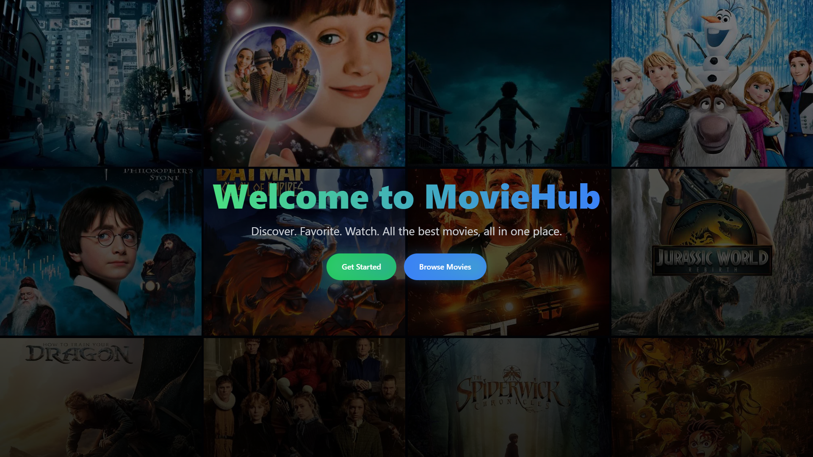

MovieHub

Description
MovieHub is a modern Django-based web application that lets users discover, browse, and explore movies with ease. It integrates with the TMDB (The Movie Database) API to fetch dynamic movie data and provides an engaging and interactive movie browsing experience.
🛠 Features
- Dynamic Movie Posters: Fetches movie data and posters from TMDB.
- Search Movies: Easily search for movies by name.
- Movie Details: View detailed information about each movie.
- User Signup/Login: Authentication system for users.
- Responsive Design: Works on desktop and mobile devices.
- Beautiful Hero Section: Stylish layout with gradient animations and modern UI.
💻 Tech Stack
- Backend: Python, Django
- Frontend: HTML, Tailwind CSS, JavaScript
- API: TMDB API for movie data
- Database: SQLite